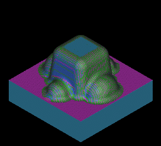

This metric part is a core machined from a solid block of material. The completed machining program consists of six operations that rough, semi-finish, and finish the part. You will create the last four operations using the Area Mill drive method to semi-finish and finish the part.

To complete this project, you should be familiar with the following types of operations.
CONTOUR_AREA_NON-STEEP
CONTOUR_AREA
CONTOUR_AREA_DIR_STEEP
In addition, you should know how to create a Mill Area parent group and how to define a Trim Boundary and a Cut Area.